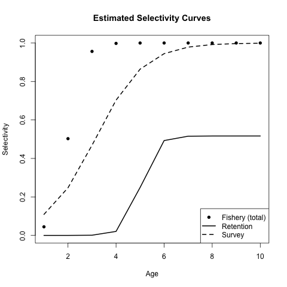
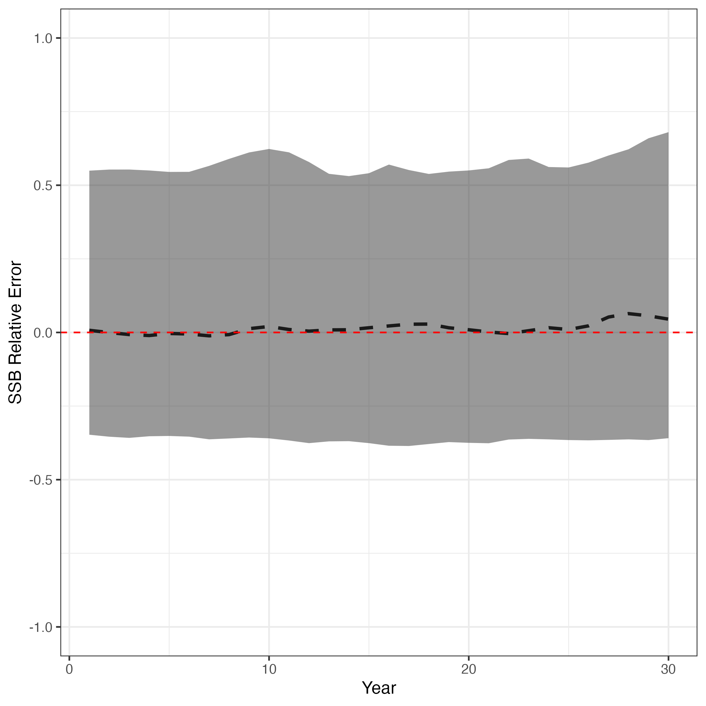

Discard and Retention Modeling
s_discard_retention.RmdIn some cases, some fisheries discard a portion of their catch at sea
(i.e., non-retained catch). SPoRC supports explicit discard
and retention modeling through several interconnected components:
- Total selectivity (
fish_sel): the probability of encountering (catching) a fish at age. - Retention selectivity (
ret_sel): the probability that a caught fish is retained (landed), conditional on capture. - Discard mortality rate (
dmr): the fraction of discarded fish that die
In the following, we will demonstrate how discarding and retention
dynamics can be leveraged in both simulation and estimation using
SPoRC.
Operating Model Configuration
We begin by setting up a simple OM that consists of one region, one population, one sex, as well as single fishery and survey fleet. Note that data uncertainty (e.g., survey index standard deviations and input sample sizes) use the default settings.
library(SPoRC)
sim_list <- Setup_Sim_Dim(
n_sims = 50,
n_yrs = 30,
n_regions = 1,
n_ages = 10,
n_lens = NULL,
n_sexes = 1,
n_fish_fleets = 1,
n_srv_fleets = 1,
n_pop = 1
)
sim_list <- Setup_Sim_Containers(sim_list)Fishery Selectivity and Retention
Total fishery selectivity follows a logistic curve with an inflection near age 2, while retention selectivity is an asymptotic logistic that plateaus at 0.5 (i.e., fully selected older fish have only a 50% chance of being retained). The dead discard rate is set at 0.5 across all years. Note that discard units to generate a discard time-series are in units of biomass fractions (default behavior).
sim_list <- Setup_Sim_Fishing(
sim_list = sim_list,
# Total fishery selectivity (logistic, inflection ~ age 2)
fish_sel_input = replicate(
n = sim_list$n_sims,
array(
rep(1 / (1 + exp(-3 * ((1:sim_list$n_ages) - 2))), each = sim_list$n_yrs),
dim = c(sim_list$n_pop, sim_list$n_regions, sim_list$n_yrs,
sim_list$n_seas, sim_list$n_ages, sim_list$n_sexes,
sim_list$n_fish_fleets)
)
),
# Retention selectivity (asymptotic logistic, max ~ 0.5)
ret_sel_input = replicate(
n = sim_list$n_sims,
array(
rep(0.5 / (1 + exp(-3 * ((1:sim_list$n_ages) - 5))), each = sim_list$n_yrs),
dim = c(sim_list$n_pop, sim_list$n_regions, sim_list$n_yrs,
sim_list$n_seas, sim_list$n_ages, sim_list$n_sexes,
sim_list$n_fish_fleets)
)
),
# Dead discard rate = 0.5
dmr_input = array(0.5, dim = c(sim_list$n_regions, sim_list$n_yrs,
sim_list$n_seas, sim_list$n_fish_fleets,
sim_list$n_sims))
)Survey Process
The survey uses a logistic selectivity with a more gradual slope and later inflection (age 3), mimicking a gear that selects somewhat older fish than the fishery.
sim_list <- Setup_Sim_Survey(
sim_list = sim_list,
srv_sel_input = replicate(
n = sim_list$n_sims,
array(
rep(1 / (1 + exp(-1 * ((1:sim_list$n_ages) - 3))), each = sim_list$n_yrs),
dim = c(sim_list$n_pop, sim_list$n_regions, sim_list$n_yrs,
sim_list$n_seas, sim_list$n_ages, sim_list$n_sexes,
sim_list$n_srv)
)
)
)Biological Parameters
Natural mortality is fixed at 0.3. Weight-at-age and maturity-at-age both follow logistic growth/maturation curves with inflection at age 3.
sim_list <- suppressWarnings(
Setup_Sim_Biologicals(
sim_list = sim_list,
natmort_input = replicate(
n = sim_list$n_sims,
array(0.3, dim = c(sim_list$n_pop, sim_list$n_regions,
sim_list$n_yrs, sim_list$n_ages, sim_list$n_sexes))
),
WAA_input = replicate(
n = sim_list$n_sims,
array(
rep(5 / (1 + exp(-3 * ((1:sim_list$n_ages) - 3))), each = sim_list$n_yrs),
dim = c(sim_list$n_pop, sim_list$n_regions, sim_list$n_yrs,
sim_list$n_seas, sim_list$n_ages, sim_list$n_sexes)
)
),
WAA_fish_input = replicate(
n = sim_list$n_sims,
array(
rep(5 / (1 + exp(-3 * ((1:sim_list$n_ages) - 3))), each = sim_list$n_yrs),
dim = c(sim_list$n_pop, sim_list$n_regions, sim_list$n_yrs,
sim_list$n_seas, sim_list$n_ages, sim_list$n_sexes,
sim_list$n_fish_fleets)
)
),
WAA_srv_input = replicate(
n = sim_list$n_sims,
array(
rep(5 / (1 + exp(-3 * ((1:sim_list$n_ages) - 3))), each = sim_list$n_yrs),
dim = c(sim_list$n_pop, sim_list$n_regions, sim_list$n_yrs,
sim_list$n_seas, sim_list$n_ages, sim_list$n_sexes,
sim_list$n_srv_fleets)
)
),
MatAA_input = replicate(
n = sim_list$n_sims,
array(
rep(1 / (1 + exp(-3 * ((1:sim_list$n_ages) - 3))), each = sim_list$n_yrs),
dim = c(sim_list$n_pop, sim_list$n_regions, sim_list$n_yrs,
sim_list$n_seas, sim_list$n_ages, sim_list$n_sexes)
)
)
)
)Tagging and Movement
No tagging or movement is used in this example.
sim_list <- Setup_Sim_Tagging(
sim_list = sim_list,
use_conv_fish_tagging = 0
)
sim_list$Movement <- array(
1,
dim = c(sim_list$n_pop, sim_list$n_regions, sim_list$n_regions,
sim_list$n_yrs, sim_list$n_seas, sim_list$n_ages,
sim_list$n_sexes, sim_list$n_sims)
)Data Simulation
With the OM fully specified, we simulate population dynamics and generate observation data.
set.seed(777)
sim_obj <- Simulate_Pop_Static(sim_list = sim_list, output_path = NULL)Estimation Model
The estimation model mirrors the OM structure but estimates key parameters: fishery selectivity (logistic), retention selectivity (asymptotic logistic), survey selectivity (logistic), catchability, recruitment deviations, and the dead discard rate. The function below encapsulates the full EM setup for a single simulation replicate.
setup_em <- function(sim_obj, sim) {
# get simulation data
sim_data <- simulation_data_to_SPoRC(
sim_env = sim_obj, y = sim_obj$n_years, sim = sim
)
# Model dimensions
input_list <- Setup_Mod_Dim(
years = 1:sim_obj$n_years,
ages = 1:sim_obj$n_ages,
lens = sim_obj$n_lens,
n_regions = sim_obj$n_regions,
n_sexes = sim_obj$n_sexes,
n_fish_fleets = sim_obj$n_fish_fleets,
n_srv_fleets = sim_obj$n_srv_fleets,
n_pop = sim_obj$n_pop,
natal_region = sim_obj$natal_region,
verbose = FALSE
)
# Recruitment
input_list <- Setup_Mod_Rec(
input_list = input_list,
do_rec_bias_ramp = 0,
sigmaR_switch = 1,
ln_sigmaR = array(log(0.5), c(2, input_list$data$n_pop,
input_list$data$n_regions)),
rec_model = "mean_rec",
sigmaR_spec = "fix",
init_age_strc = 1,
equil_init_age_strc = 2,
ln_global_R0 = log(5)
)
# Biologicals
input_list <- Setup_Mod_Biologicals(
input_list = input_list,
WAA = sim_data$WAA,
MatAA = sim_data$MatAA,
WAA_fish = sim_data$WAA_fish,
WAA_srv = sim_data$WAA_srv,
fit_lengths = 0,
AgeingError = sim_data$AgeingError,
M_spec = "fix",
Fixed_natmort = array(0.3, dim = c(input_list$data$n_pop,
input_list$data$n_regions,
length(input_list$data$years),
length(input_list$data$ages),
input_list$data$n_sexes))
)
# Tagging and movement (none)
input_list <- Setup_Mod_Tagging(input_list = input_list, use_conv_fish_tagging = 0)
input_list <- Setup_Mod_Movement(
input_list = input_list,
use_fixed_movement = 1,
Fixed_Movement = NA,
do_recruits_move = 0
)
# Catch, fishing mortality, and discards
input_list <- Setup_Mod_Catch_and_F(
input_list = input_list,
ObsCatch = sim_data$ObsCatch,
UseCatch = sim_data$UseCatch,
Use_F_pen = 1,
sigmaC_spec = "fix",
ln_sigmaC = sim_data$ln_sigmaC,
ln_sigmaF = array(log(1), dim = c(input_list$data$n_regions,
input_list$data$n_seas,
input_list$data$n_fish_fleets)),
# Discard data (discard units are biomass fractions as default)
ObsDiscard = sim_data$ObsDiscard, # observed discards
UseDiscard = sim_data$UseDiscard, # using discards
sigma_dmr_spec = "fix", # fixing the deviations of discard mortality rate
dmr_mean_spec = "est_all", # estimating discard mortality rate deviations
ln_sigmaD = sim_data$ln_sigmaD # discard time series uncertainty
)
# Fishery indices and compositions (retained + discard)
input_list <- Setup_Mod_FishIdx_and_Comps(
input_list = input_list,
# Fishery index
ObsFishIdx = sim_data$ObsFishIdx,
ObsFishIdx_SE = sim_data$ObsFishIdx_SE,
UseFishIdx = sim_data$UseFishIdx,
# Retained age compositions
ObsFishAgeComps = sim_data$ObsFishAgeComps,
ObsFishLenComps = sim_data$ObsFishLenComps,
UseFishAgeComps = sim_data$UseFishAgeComps,
UseFishLenComps = sim_data$UseFishLenComps,
ISS_FishAgeComps = sim_data$ISS_FishAgeComps,
ISS_FishLenComps = sim_data$ISS_FishLenComps,
fish_idx_type = "biom",
FishAgeComps_LikeType = "Multinomial",
FishLenComps_LikeType = "none",
FishAgeComps_Type = "agg_Year_1-terminal_Fleet_1",
FishLenComps_Type = "none_Year_1-terminal_Fleet_1",
# Discard age compositions
ObsFishAgeComps_discard = sim_data$ObsFishAgeComps_discard,
UseFishAgeComps_discard = sim_data$UseFishAgeComps_discard,
ISS_FishAgeComps_discard = sim_data$ISS_FishAgeComps_discard,
FishAgeComps_discard_LikeType = rep("Multinomial", input_list$data$n_fish_fleets),
FishAgeComps_discard_Type = "agg_Year_1-terminal_Fleet_1",
)
# Survey indices and compositions
input_list <- Setup_Mod_SrvIdx_and_Comps(
input_list = input_list,
ObsSrvIdx = sim_data$ObsSrvIdx,
ObsSrvIdx_SE = sim_data$ObsSrvIdx_SE,
UseSrvIdx = sim_data$UseSrvIdx,
ObsSrvAgeComps = sim_data$ObsSrvAgeComps,
ObsSrvLenComps = sim_data$ObsSrvLenComps,
UseSrvAgeComps = sim_data$UseSrvAgeComps,
UseSrvLenComps = sim_data$UseSrvLenComps,
ISS_SrvAgeComps = sim_data$ISS_SrvAgeComps,
ISS_SrvLenComps = sim_data$ISS_SrvLenComps,
srv_idx_type = "biom",
SrvAgeComps_LikeType = "Multinomial",
SrvLenComps_LikeType = "none",
SrvAgeComps_Type = "agg_Year_1-terminal_Fleet_1",
SrvLenComps_Type = "none_Year_1-terminal_Fleet_1"
)
# Fishery selectivity: logistic for total, asymptotic logistic for retention
input_list <- Setup_Mod_Fishsel_and_Q(
input_list = input_list,
fish_sel_model = "logist1_Fleet_1",
fish_fixed_sel_pars_spec = "est_all",
fish_q_spec = "est_all",
ret_sel_model = "asymplogist1_Fleet_1",
ret_fixed_sel_pars_spec = "est_all",
use_fixed_ret_sel = 0
)
# Survey selectivity
input_list <- Setup_Mod_Srvsel_and_Q(
input_list = input_list,
srv_sel_model = "logist1_Fleet_1",
srv_fixed_sel_pars_spec = "est_all",
srv_q_spec = "est_all"
)
# Data weighting (no data weights used)
input_list <- Setup_Mod_Weighting(
input_list = input_list,
Wt_Catch = 1,
Wt_FishIdx = 1,
Wt_SrvIdx = 1,
Wt_Rec = 1,
Wt_F = 1,
Wt_Discard = 1,
Wt_D = 1,
Wt_FishAgeComps = array(1, dim = c(input_list$data$n_regions,
length(input_list$data$years),
input_list$data$n_seas,
input_list$data$n_sexes,
input_list$data$n_fish_fleets)),
Wt_FishLenComps = array(1, dim = c(input_list$data$n_regions,
length(input_list$data$years),
input_list$data$n_seas,
input_list$data$n_sexes,
input_list$data$n_fish_fleets)),
Wt_SrvAgeComps = array(1, dim = c(input_list$data$n_regions,
length(input_list$data$years),
input_list$data$n_seas,
input_list$data$n_sexes,
input_list$data$n_srv_fleets)),
Wt_FishAgeComps_discard = array(1, dim = c(input_list$data$n_regions,
length(input_list$data$years),
input_list$data$n_seas,
input_list$data$n_sexes,
input_list$data$n_fish_fleets))
)
return(input_list)
}Fitting Across Simulations
We loop over all 50 simulation replicates, fit the EM to each, and store the estimated SSB trajectories.
ssb_results <- array(NA, dim = c(sim_list$n_yrs, sim_list$n_sims))
for (i in 1:sim_obj$n_sims) {
# setup EM from above
input_list <- setup_em(sim_obj, sim = i)
# fit model
model <- fit_model(
input_list$data,
input_list$par,
input_list$map,
random = NULL,
silent = TRUE,
do_optim = TRUE,
newton_loops = 3
)
ssb_results[, i] <- as.vector(model$rep$SSB)
}Selectivity Estimates
Plotting selectivity curves from the final replicate gives a quick visual check that the EM recovers the OM’s total selectivity, retention selectivity, and survey selectivity.
plot(model$rep$fish_sel[1, 1, 1, 1, , 1, 1],
ylim = c(0, 1), xlab = "Age", ylab = "Selectivity",
pch = 16, main = "Estimated Selectivity Curves")
lines(model$rep$ret_sel[1, 1, 1, 1, , 1, 1], lwd = 2)
lines(model$rep$srv_sel[1, 1, 1, 1, , 1, 1], lty = 2, lwd = 2)
legend("bottomright",
legend = c("Fishery (total)", "Retention", "Survey"),
pch = c(16, NA, NA), lty = c(NA, 1, 2), lwd = 2)
SSB Relative Error
We also compute relative error in SSB across all simulations and years to evaluate estimation performance. In general, we see that the model is unbiased and is able to recover the true spawning stock biomass values, though estiamtes later on demonstrate slightly larger biases (as expected, given data availiability in an age-structured model).
library(dplyr)
library(ggplot2)
library(reshape2)
ssb_df_res <- reshape2::melt(ssb_results) %>%
rename(Year = Var1, Sim = Var2, Est = value) %>%
left_join(
melt(sim_obj$SSB) %>%
rename(Pop = Var1, Region = Var2, Year = Var3, Sim = Var4, True = value),
by = c("Year", "Sim")
) %>%
mutate(RE = (Est - True) / True) %>%
group_by(Year) %>%
summarize(
lwr = quantile(RE, 0.025),
upr = quantile(RE, 0.975),
RE = median(RE))
ggplot(ssb_df_res, aes(x = Year, y = RE, ymin = lwr, ymax = upr)) +
geom_line(lwd = 1.3, lty = 2) +
geom_ribbon(alpha = 0.5) +
geom_hline(yintercept = 0, lty = 2, color = "red") +
labs(x = "Year", y = "SSB Relative Error") +
theme_bw(base_size = 14) +
coord_cartesian(ylim = c(-1, 1))